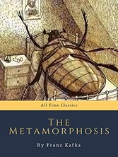
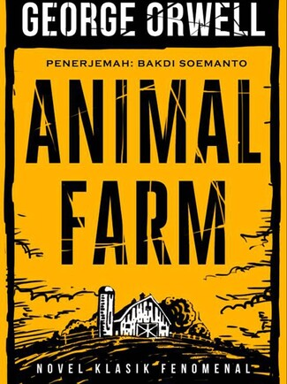
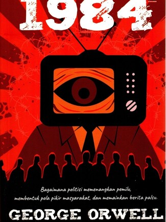

Buku
Berikut adalah buku-buku sastra yang dapat digunakan sebagai refleksi dan rekomendasi.
Metamorphosis

Buku "Metamorfosis" (judul asli: Die Verwandlung) adalah novella paling terkenal karya Franz Kafka yang terbit pertama kali pada tahun 1915. Buku ini dianggap sebagai salah satu karya sastra paling berpengaruh di abad ke-20 karena gaya penceritaannya yang surealis dan absurd.
Animal Farm

Buku "Animal Farm" (diterjemahkan sebagai Reperiblik Hewan atau Peternakan Hewan) adalah novel satir dan fabel politik karya George Orwell yang terbit pada tahun 1945. Buku ini merupakan salah satu karya sastra paling penting yang menyindir korupsi kekuasaan melalui analogi kehidupan hewan di peternakan..
1984

Buku "1984" adalah mahakarya George Orwell yang terbit pada tahun 1949. Jika Animal Farm menggunakan fabel untuk menyindir revolusi, 1984 adalah novel distopia yang lebih kelam tentang masa depan di bawah kendali totaliter yang mutlak.